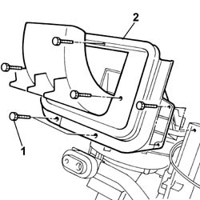
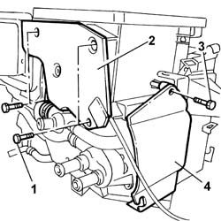
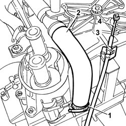
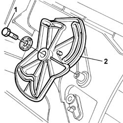
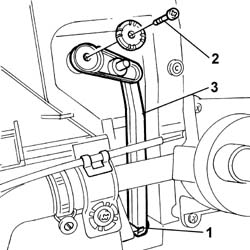
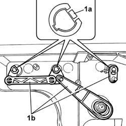
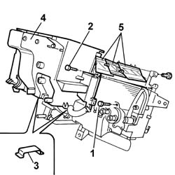

5040C93 LH VENTILATION DISTRIBUTION FLAP RR WITH AIR CONDITIONER BOX REMOVED
- Path
- Procedures > 50 AUXILIARY UNITS > 5040 AIR CONDITIONING CASING AND COMPONENTS > 5040C AIR CONDITIONER BOX AND COMPONENTS > 5040C93 LH VENTILATION DISTRIBUTION FLAP RR WITH AIR CONDITIONER BOX REMOVED
- Kind
- repair procedure (removal / refitting; the operation number is the code)
- Applies to
- all engines; all production periods
- Interactive page
- https://sloeber94.github.io/elrnDB-fDct/en/#/244001304
Applies to: all engines; all production periods
 Removing
Removing
 Refitting
Refitting1. Undo the fixing bolts.
2. Remove the recirculation air intake duct.

Applies to: all engines; all production periods
1. Undo the fixing bolts.
2. Remove the rear guard.
3. Undo the fixing bolt.
4. Remove the side guard.

Applies to: all engines; all production periods
1. Remove the retaining band.
2. Disconnect the radiator return pipe from the tap and place it at the side.
3. Open the fastening spring.
4. Disconnect the control cable and remove it.

Applies to: all engines; all production periods
1. Undo the fixing bolt.
2. Remove the flap linkage control device.

Applies to: all engines; all production periods
1. Disconnect the ball joint.
2. Undo the fixing bolt.
3. Remove the floor air distribution flap linkage.

Applies to: all engines; all production periods
1. Act on the springs (1a) and remove the linkage (1b).

Applies to: all engines; all production periods
- Remove the upper seal using a suitable tool.
1. Undo the upper bolt fixing the tap.
2. Undo the fixing bolts.
3. Remove the metal springs.
4. Remove the front upper half casing.
5. Remove the flaps.

Applies to: all engines; all production periods
Refitting
Removing- Position the flaps inside the half casings.
- Tighten the fixing bolts.
- Attach the metal springs.
- Tighten the upper bolt fixing the tap.
- Fit a new upper seal.
- Position the flap linkage and secure it.
- Position the floor air distribution flap linkage and tighten the fixing bolt.
- Connect the ball joint to the floor air distribution flap.
- Position the flap linkage control device and tighten the fixing bolt.
- Connect the return pipe from the radiator to the tap and secure it using a suitable band.
- Connect the control cable and secure it using the fastening spring.
- Position the side guard and tighten the fixing bolt.
- Position the rear guard and tighten the fixing bolts.
- Position the recirculation air intake duct and tighten the fixing bolts.